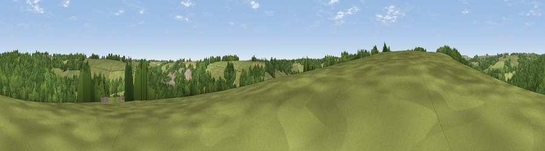

Viewpoint near Avening
#42169 in England · top 82% of its area beats it · near Avening · path 72 mWhere it is
The exact computed spot (ST 87325 98375). Click the marker for map links.
Public access: the nearest public right of way is about 72 m away — the final stretch may cross private land. Computed from Natural England's CRoW access layer and OpenStreetMap rights of way — not the legal definitive map. Always verify locally.
The view, rendered

A 360° render of this exact spot computed from the terrain model, tree cover and land cover — summer colours, afternoon light, calibrated against photographs of famous viewpoints. Real trees, hedges and buildings will differ in detail.
The panorama
Grey silhouette: terrain skyline in each direction (720 bearings, Earth curvature and refraction included). Dashed green: skyline with trees (+15 m) and buildings (+8 m) as obstacles. Blue strip: how far the ground is visible on each bearing.
Where the view opens
Wedge length = distance to the farthest visible ground on that bearing (vegetation-aware). Rings at 10, 25 and 50 km.
What fills the view
48% grassland · 45% woodland · 4% cropland · 2% built-up
Angular shares of the visible panorama (visual magnitude), not map area. Landscape diversity 0.41 (0–1 Shannon).
Key numbers
More beautiful places nearby
The staircase of upgrades: each row has a higher view potential than everything closer. Driving times are estimates from straight-line distance, calibrated against real road routing — check an actual route before setting out.
| Place | Direction | Drive | Score |
|---|---|---|---|
| Viewpoint near Amberley | NNW · 3 km | ~8 min | 44.4 |
| Viewpoint near Thrupp | N · 5 km | ~12 min | 48.5 |
| Viewpoint near Eastcombe | N · 6 km | ~13 min | 51.8 |
| Viewpoint near Owlpen | W · 7 km | ~14 min | 57.9 |
| Viewpoint near Selsley | NW · 7 km | ~14 min | 73.5 |
| Viewpoint near Nympsfield | WNW · 8 km | ~16 min | 74.9 |
| Viewpoint near Nympsfield | WNW · 8 km | ~17 min | 77.5 |
| Viewpoint near Stinchcombe | W · 13 km | ~25 min | 79.4 |
51.68399, -2.18474 · source: screening · position refined by local search. Computed location — check access rights before visiting.